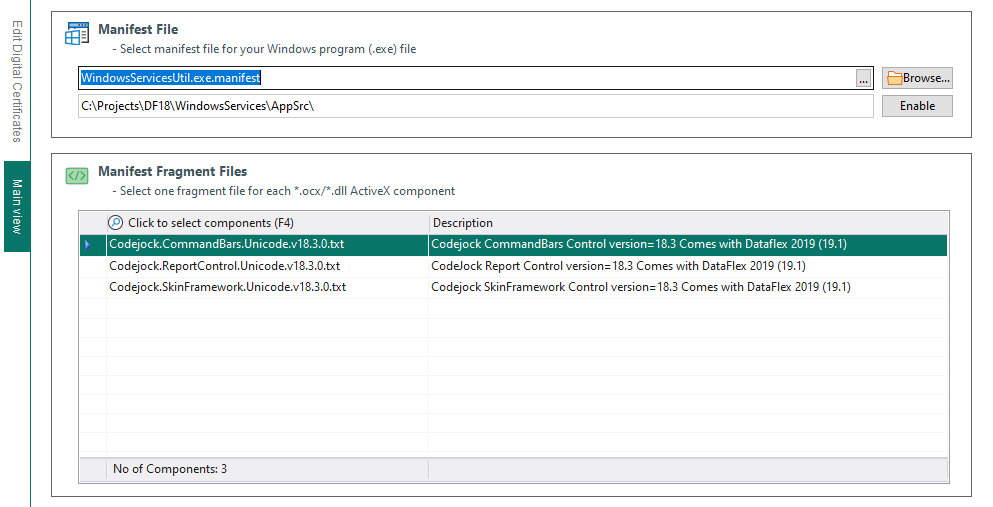

How it works

How it works
The program works by combining tiny manifest fragment files that - one per COM component - and includes them in your application's manifest file. This happens when you click the "Build!" button. If there are conflicting TypeLib declarations from similar COM components you will be notified and you need to select the TypeLib's to be used.
The manifest file creation process works by reading the top part of the current application's manifest file and write the lines back to a new file, it will then overwrite all current COM component information in the manifest file and add dependency information from the manifest fragment files you have selected. Important: A backup copy of the manifest file will be created - with todays date and current time - just in case something should go wrong.
The second part of the puzzle - for the technique to work - is that the COM components used by the application needs to reside in the application folder. The COM Manifest Studio program helps you achieve it when you press the "Copy COM Components" button. Before you do - you need to arrange so that the COM components exists in the "Common COM Library folder" of this workspace unless they are CodeJock controls that you have purchased and installed on the machine, in case the program will copy them from their installed location to the application folder. Those COM components must of course also be present in the programs folder when deploying your application.
After you have pressed the "Build!" button you can optionally press the "Embed in Program" button to make your program installation even more robust and safe! The .manifest file is then embedded into the .exe file. Of course you will need to do this after each compilation of your application - or prior building your installation program for deployment. If doing so you don't need to deploy the application manifest file and the installation cannot be tampered with by users.
Note that if the manifest file exists in the programs folder and you have embedded manifest data into the executable, the executable embedded manifest data takes presedence. Unless the platform is Windows XP - in case the opposite is true (thank you Microsoft).
Caching of manifest data
Manifests are cached in the Activation Context Cache by Windows. The activation context cache is a mysterious entity that does not seem to be discussed directly in MSDN documentation. This cache is resident in memory and there is no way to give a command to flush it. The secret here is that if you change the .exe’s modified date time stamp, the loader will look again for a manifest. This seems to work reliably every time. For that reason you will get a question each time a manifest file is build and if "Yes" is selected, the .exe file will get touched to change the modified time and thus the manifest data will be re-read by Windows.